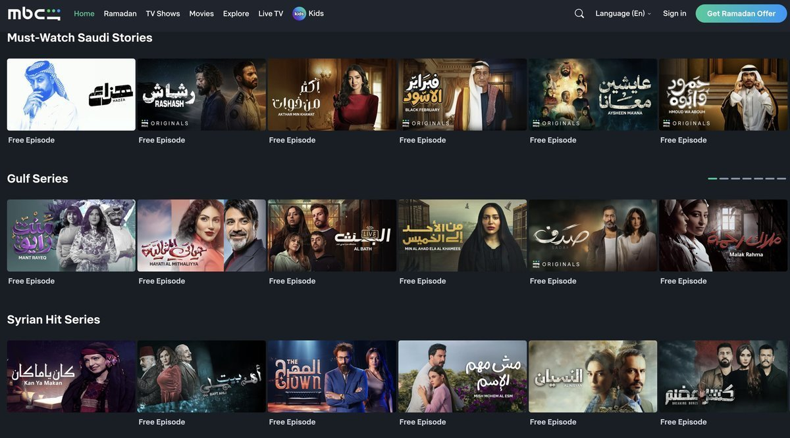
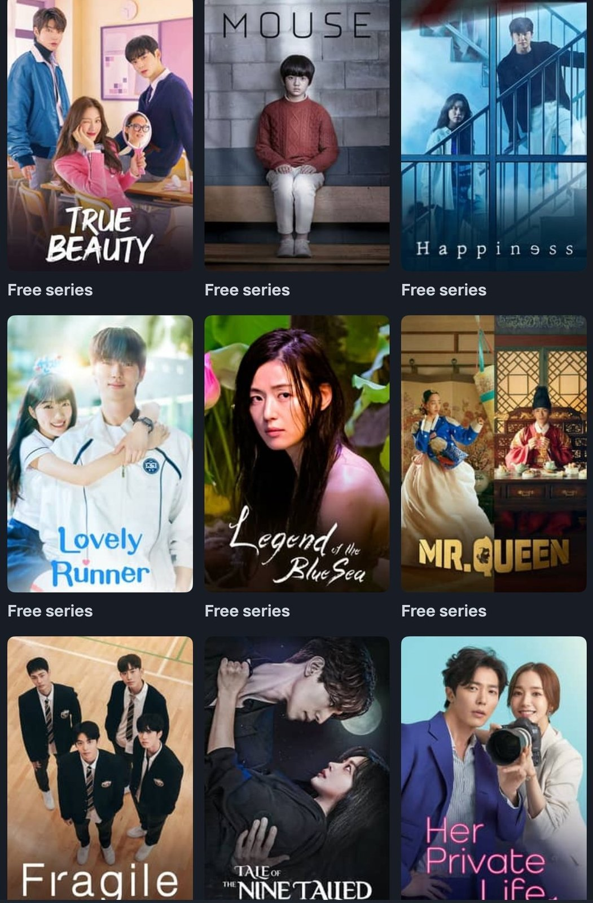
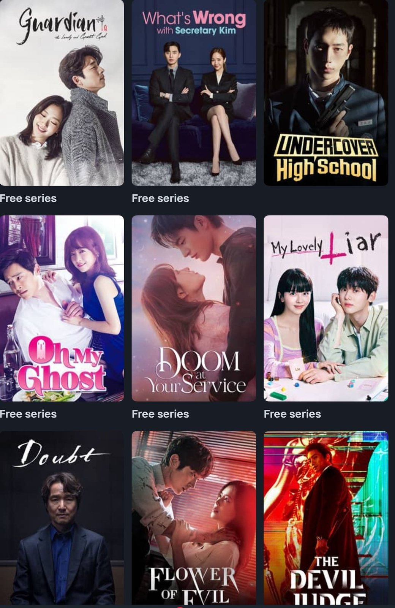
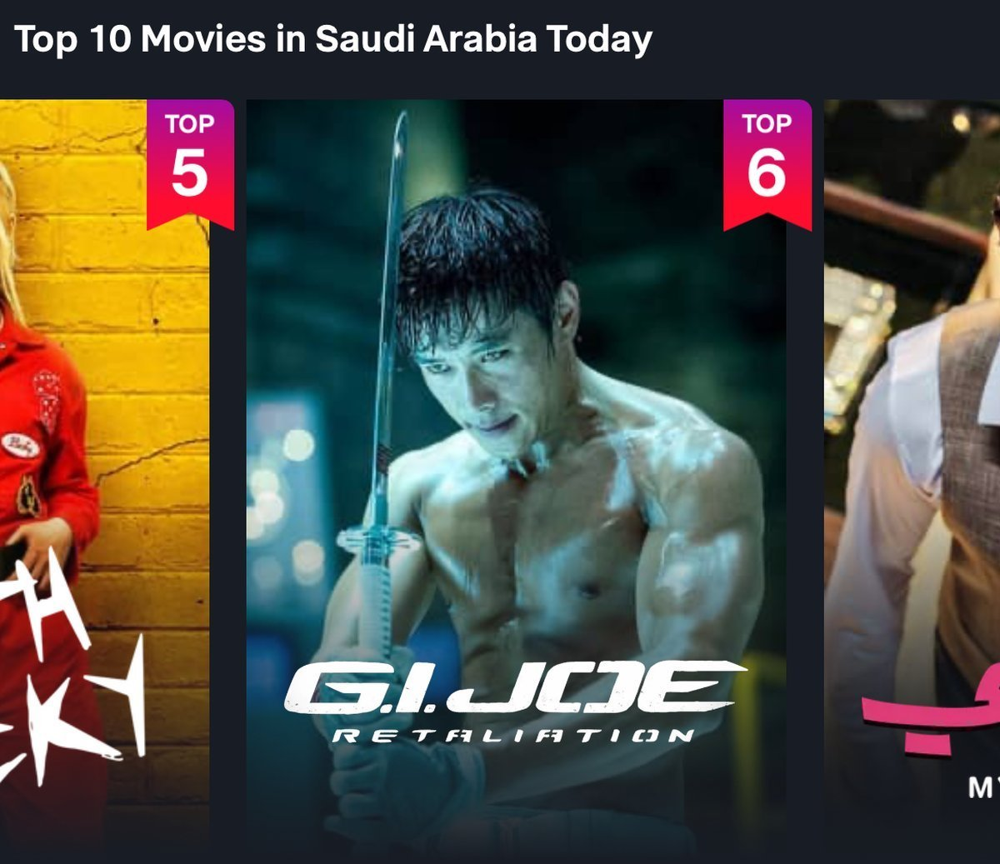

중동의 대표 OTT, 엠비씨 샤히드(MBC Shahid)
샤히드(Shahid)는 사우디아라비아 기반의 중동 최대 미디어 그룹 MBC가 운영하는 스트리밍 플랫폼으로, 사우디를 비롯한 중동·아프리카 지역에서 영향력 있는 OTT 서비스로 자리 잡았다. 2025년 기준, 샤히드는 약 440만 명의 구독자를 확보하며 중동·북아프리카(SVOD) 시장에서 가장 많은 구독자를 보유한 플랫폼으로 평가된다. 이는 유튜브 프리미엄(YouTube Premium) 약 370만 명, 넷플릭스(Netflix) 약 300만 명을 웃도는 수치다. 전문가들은 샤히드가 현지화 전략과 중동 콘텐츠 라인업 강화로 구독자 수를 꾸준히 늘리며, 지역 내 스트리밍 시장 경쟁에서 독보적인 위치를 확보하고 있다고 분석한다.

▲ 엠비씨 샤히드(MBC Shahid) 온라인 동영상 서비스(OTT) 화면 — 출처: 엠비씨 샤히드(MBC Shahid)
사우디 국부펀드(Public Investment Fund, PIF)는 2025년 MBC 그룹 지분 54%를 인수하며 주요 주주로 올라섰다. 이는 비전(Vision) 2030 정책 아래 미디어·콘텐츠 산업을 전략적으로 육성하려는 움직임의 일환으로 해석된다. 최근 샤히드(MBC Shahid)에서는 사우디 오리지널 드라마와 예능 제작이 확대되고 있으며, 청년 세대와 여성 서사를 다루는 작품도 증가하는 추세다. 단순한 콘텐츠 유통을 넘어, 자국 제작 콘텐츠를 확장하는 플랫폼으로 기능하며 중동 콘텐츠 산업의 변화에 핵심적인 역할을 하고 있다. 샤히드의 월 구독료는 약 44.99~89.99리얄(한화 약 1만 6천~3만 4천 원) 수준으로, 드라마와 영화뿐만 아니라 스포츠 경기, 라이브 TV 방송까지 포함한 종합 콘텐츠 구성을 갖추고 있다. 또한 짧은 형식의 영상 콘텐츠(Shorts) 서비스도 제공해 모바일 시청 환경에 대응하고 있다. 기존 위성 방송 중심의 미디어 환경이 모바일 기반 스트리밍으로 빠르게 이동하면서, 샤히드는 사우디 콘텐츠 산업 변화의 상징적 플랫폼으로 평가받고 있다. 전문가들은 "샤히드의 콘텐츠 확장과 모바일 친화적 서비스는 플랫폼 경쟁력을 높이는 동시에, 사우디 자체 콘텐츠 산업 성장에도 기여하고 있다"고 분석했다.
엠비씨 샤히드 내 한국 콘텐츠의 확장
샤히드(MBC Shahid)는 아랍권 콘텐츠뿐만 아니라 미국, 유럽, 아시아 작품까지 함께 제공하며 글로벌 OTT 경쟁 속에서 다양한 해외 콘텐츠 유통 전략을 취하고 있다. 대부분의 작품은 무료로 제공되지만, 광고 시청이 필수이며 일부 작품과 광고 없이 시청을 원하는 경우에는 구독 서비스가 필요하다. 이러한 전략은 이용자 접근성을 높이면서도 유료 구독을 통한 수익 모델을 확보하려는 플랫폼 운영 전략으로 평가된다. 특히 한국 콘텐츠의 확장은 샤히드가 중동 시청자에게 다양한 문화적 경험을 제공하는 동시에, 한류 콘텐츠에 대한 관심을 반영하고 있다는 점에서 주목된다.


▲ 엠비씨 샤히드(MBC Shahid)에서 제공하는 한국드라마 — 출처: 엠비씨 샤히드(MBC Shahid)
샤히드(MBC Shahid)에서 특히 눈에 띄는 영역은 한국 콘텐츠 카테고리다. 〈푸른 바다의 전설〉, 〈도깨비〉 등 이미 중동 지역에서 인지도를 확보한 한국 드라마가 제공되며, 아랍어 자막으로 시청할 수 있다. 이는 한국 드라마가 글로벌 OTT 플랫폼을 넘어 중동 지역의 로컬 OTT 환경에서도 활발히 유통되고 있음을 보여준다. 그동안 한국 드라마의 로맨스, 가족 서사, 감정 중심의 이야기 구조는 아랍권 시청자들과 일정 부분 정서적 접점을 형성해 왔다. 전문가들은 "한국 드라마는 감정 표현과 서사 구조에서 아랍권 시청자와 공감대를 형성하며, 샤히드 내 한국 콘텐츠 확장에 중요한 역할을 하고 있다"고 분석했다.
샤히드(MBC Shahid) 내에서는 한국 드라마는 활발히 제공되고 있지만, 한국 예능과 영화 콘텐츠는 아직 찾아보기 어려운 상황이다. 다만, 한국 배우 이병헌이 출연한 할리우드 영화 〈지.아이.조〉는 샤히드 내 '사우디아라비아 톱 무비(Top Movies in Saudi Arabia)' 순위에서 6위에 올라 눈길을 끈다. 이 사례는 한국 배우 출연작이 중동 시청자에게 주목받고 있음을 보여주며, 향후 한국 영화 및 예능 콘텐츠 확장 가능성을 시사한다.

▲ 2월 기준 엠비씨 샤히드(MBC Shahid) '사우디아라비아 영화 톱텐' 6위: 〈지.아이.조〉 — 출처: 엠비씨 샤히드(MBC Shahid)
사진출처 및 참고자료
엠비씨 샤히드(MBC Shahid) 홈페이지, shahid.mbc.net
≪사우디국부펀드(Public Investment Fund)≫ (2025. 9. 22). PIF completes acquisition of 54% of media company MBC Group, pif.gov.sa
≪옴디아(Omdia)≫ (2025. 5. 13). SVOD growth to drive MENA streaming market past $1.5 billion in 2025, omdia.tech.informa.com